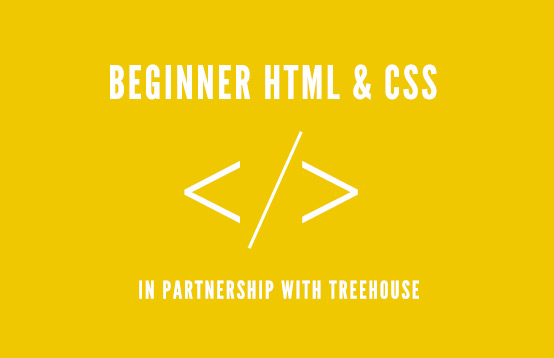

目次
HTML
- 構文
- HTML5 doctype
- 言語属性（Language attribute）
- 文字エンコーディング
- IE 互換モード
- CSS と JavaScript ファイルの読み込み
- 実用性を最優先
- 属性の順序
- ブール（boolean）型属性
- タグの数を減らす
- JavaScript で生成されるタグ
CSS
- 構文
- 宣言の順序
- メディアクエリ（Media query）の位置
- プレフィックス付きプロパティ
- 単行ルール宣言
- ショートハンド形式のプロパティ宣言
- Less と Sass におけるネスト
- コメント
- class の命名
- セレクタ
- コードの構成

黄金律
プロジェクトは常に同じコーディング規約に従うべきです！
同じプロジェクトに何人の開発者が参加していても、すべてのコード行が一人の人間によって書かれたように見えるようにしてください。
HTML
構文
- タブ（tab）の代わりにスペース2つを使用する – これはあらゆる環境で一貫した表示を保証する唯一の方法です。
- ネストされた要素は1回分（スペース2つ）インデントします。
- 属性の定義には必ず二重引用符を使用し、単一引用符は絶対に使用しないでください。
- 自己終了（self-closing）要素の末尾にスラッシュを追加しないでください -HTML5 仕様では、これは任意であると明確に定められています。
- 省略可能な終了タグ（closing tag）を省略しないでください（例：
</li>或</body>）。
<!DOCTYPE html>
<html>
<head>
<title>Page title</title>
</head>
<body>
<img src="images/company-logo.png.html" alt="Company">
<h1 class="hello-world">Hello, world!</h1>
</body>
</html>
HTML5 doctype
各 HTML ページの先頭に標準モード（standard mode）の宣言を追加してください。これにより、すべてのブラウザで一貫した表示が保証されます。
<!DOCTYPE html> <html> <head> </head> </html>
言語属性
HTML5 仕様によると：
html ルート要素に lang 属性を指定して、ドキュメントに正しい言語を設定することを強く推奨します。これにより、音声合成ツールが採用すべき発音を判断し、翻訳ツールが翻訳時に従うべき規則を判断するのに役立ちます。
詳細については、lang属性の知識はこの仕様で確認できます。
ここに一覧を示します言語コード表。
<html lang="zh-CN"> <!-- ... --> </html>
IE 互換モード
IE は特定の<meta>タグを使用して、現在のページを描画する際に採用すべき IE バージョンを決定できます。強い特別な要件がない限り、次のように設定するのが最適です。edge mode。これにより IE に、サポートされている最新のモードを採用するよう通知します。
この Stack Overflow の記事を読んでくださいより有用な情報が得られます。
<meta http-equiv="X-UA-Compatible" content="IE=Edge">
文字エンコーディング
文字エンコーディングを明示的に宣言することで、ブラウザはページコンテンツのレンダリング方法を迅速かつ容易に判断できます。これにより、HTML で文字エンティティ（character entity）を使用することを避け、すべてをドキュメントのエンコーディング（通常は UTF-8）と一致させることができます。
<head> <meta charset="UTF-8"> </head>
CSS と JavaScript ファイルの読み込み
HTML5 仕様によると、CSS と JavaScript ファイルを読み込む際には通常、typetype 属性を指定する必要はありません。なぜなら、text/css 和 text/javascripttype はそれぞれのデフォルト値だからです。
HTML5 spec links
<!-- External CSS --> <link rel="stylesheet" href="code-guide.css.html"> <!-- In-document CSS --> <style> /* ... */ </style> <!-- JavaScript --> <script src="code-guide.js.html"></script>
実用性を最優先
HTML の標準と意味論に従うように努めますが、実用性を犠牲にしてはいけません。常に最小限のタグを使用し、複雑さを最小限に保つようにしてください。
属性の順序
HTML 属性は、コードの読みやすさを確保するために、以下に示す順序で並べる必要があります。
classid,namedata-*src,for,type,hreftitle,altaria-*,role
class は再利用性の高いコンポーネントを識別するために使用されるため、最初に配置する必要があります。id は特定のコンポーネントを識別するために使用され、慎重に使用する必要があるため（例：ページ内ブックマーク）、2番目に配置します。
<a class="..." id="..." data-modal="toggle" href="../index.html"> Example link </a> <input class="form-control" type="text"> <img src="....html" alt="...">
ブール（boolean）型属性
ブール型属性は宣言時に値を割り当てなくてもかまいません。XHTML 仕様では値を割り当てることが要求されていますが、HTML5 仕様では必要ありません。
詳細については、WhatWG section on boolean attributes：
要素のブール型属性は、値があれば true、値がなければ false になります。
もしどうしても値を割り当てる必要がある場合は、WhatWG 仕様を参照してください：
属性が存在する場合、その値は空文字列または […] 属性の仕様上の名前でなければならず、末尾に空白を追加してはいけません。
簡単に言うと、値を割り当てる必要はありません。
<input type="text" disabled> <input type="checkbox" value="1" checked> <select> <option value="1" selected>1</option> </select>
タグの数を減らす
HTML コードを書くときは、余分な親要素を避けるようにしてください。多くの場合、これを実現するには反復とリファクタリングが必要です。以下の例を参照してください：
<!-- Not so great --> <span class="avatar"> <img src="....html"> </span> <!-- Better --> <img class="avatar" src="....html">
JavaScript で生成されるタグ
JavaScript で生成されたタグは、コンテンツを検索・編集しにくくし、パフォーマンスを低下させます。避けられる場合はできるだけ避けてください。
CSS
構文
- タブ（tab）の代わりにスペース2つを使用する – これはあらゆる環境で一貫した表示を保証する唯一の方法です。
- セレクタをグループ化する場合、個々のセレクタはそれぞれ別の行に配置します。
- コードの読みやすさのため、各宣言ブロックの左中括弧の前にスペースを1つ追加します。
- 宣言ブロックの右中括弧は単独で1行に置く必要があります。
- 各宣言文の
:後にはスペースを1つ挿入する必要があります。 - より正確なエラーレポートを得るために、各宣言はそれぞれ1行に配置します。
- すべての宣言文はセミコロンで終わる必要があります。最後の宣言文の後のセミコロンは省略可能ですが、このセミコロンを省略するとコードがエラーを引き起こしやすくなる可能性があります。
- カンマで区切られるプロパティ値では、各カンマの後にスペースを1つ挿入する必要があります（例：
box-shadow）。 - 挿入しないでください
rgb()、rgba()、hsl()、hsla()或rect()値の内部のカンマの後にスペースを。 - プロパティ値や色のパラメータでは、1 未満の小数の先頭の 0 を省略します（例：
.5の代わりに0.5；-.5pxの代わりに-0.5px）。 - 16進数の値はすべて小文字にする必要があります。例：
#fff。ドキュメントをスキャンするとき、小文字の方が形が区別しやすいため、認識しやすくなります。 - 可能な場合はショートハンド形式の16進数値を使用してください。例：
#fffの代わりに#ffffff。 - セレクタ内の属性には二重引用符を追加します。例：
input[type="text"]。特定の場合にのみ省略可能ですただし、コードの一貫性のため、すべてに二重引用符を付けることをお勧めします。 - 0 の値に単位を指定しないでください。例：
margin: 0;の代わりにmargin: 0px;。
ここで使用されている用語について疑問がありますか？Wikipedia のsyntax section of the Cascading Style Sheets article。
/* Bad CSS */
.selector, .selector-secondary, .selector[type=text] {
padding:15px;
margin:0px 0px 15px;
background-color:rgba(0, 0, 0, 0.5);
box-shadow:0px 1px 2px #CCC,inset 0 1px 0 #FFFFFF
}
/* Good CSS */
.selector,
.selector-secondary,
.selector[type="text"] {
padding: 15px;
margin-bottom: 15px;
background-color: rgba(0,0,0,.5);
box-shadow: 0 1px 2px #ccc, inset 0 1px 0 #fff;
}
宣言の順序
関連するプロパティ宣言はグループ化し、以下の順序で配置する必要があります：
- Positioning
- Box model
- Typographic
- Visual
ポジショニング（positioning）は要素を通常のドキュメントフローから取り除き、ボックスモデル（box model）関連のスタイルを上書きすることもできるため、最初に配置します。ボックスモデルはコンポーネントのサイズと位置を決定するため、2番目に配置します。
その他のプロパティはコンポーネントの内部（inside）に影響するだけか、または最初の2つのプロパティグループに影響しないため、後ろに配置します。
完全なプロパティ一覧とその並び順は、こちらを参照してください。Recess。
.declaration-order {
/* Positioning */
position: absolute;
top: 0;
right: 0;
bottom: 0;
left: 0;
z-index: 100;
/* Box-model */
display: block;
float: right;
width: 100px;
height: 100px;
/* Typography */
font: normal 13px "Helvetica Neue", sans-serif;
line-height: 1.5;
color: #333;
text-align: center;
/* Visual */
background-color: #f5f5f5;
border: 1px solid #e5e5e5;
border-radius: 3px;
/* Misc */
opacity: 1;
}
使用しない@import
与 <link>タグと比較して、@importディレクティブははるかに遅く、余分なリクエスト回数が増えるだけでなく、予期しない問題を引き起こす可能性があります。代替手段は以下のとおりです：
- 複数の
<link>要素を使用する - Sass や Less などの CSS プリプロセッサを使用して、複数の CSS ファイルを1つのファイルにコンパイルします。
- Rails、Jekyll、または他のシステムで提供されているCSSファイル結合機能を通じて
参考にしてくださいSteve Souders の記事詳細な知識を得られます。
<!-- Use link elements -->
<link rel="stylesheet" href="core.css.html">
<!-- Avoid @imports -->
<style>
@import url("more.css");
</style>
メディアクエリ（Media query）の位置
メディアクエリは、可能な限り関連するルールの近くに配置してください。それらを単一のスタイルシートにまとめたり、ドキュメントの下部に置いたりしないでください。分けてしまうと、将来誰にも忘れられてしまいます。以下に典型的な例を示します。
.element { ... }
.element-avatar { ... }
.element-selected { ... }
@media (min-width: 480px) {
.element { ...}
.element-avatar { ... }
.element-selected { ... }
}
プレフィックス付きプロパティ
特定ベンダーの接頭辞付きプロパティを使用する場合は、インデントを使って各プロパティの値を垂直方向に揃えます。これにより複数行の編集が容易になります。
Textmate では、Text → Edit Each Line in Selection(⌃⌘A) を使用します。Sublime Text 2 では、Selection → Add Previous Line(⌃⇧↑) およびSelection → Add Next Line (⌃⇧↓)。
/* Prefixed properties */
.selector {
-webkit-box-shadow: 0 1px 2px rgba(0,0,0,.15);
box-shadow: 0 1px 2px rgba(0,0,0,.15);
}
単行ルール宣言
に対して宣言を1つだけ含むスタイルでは、読みやすく迅速に編集できるよう、ステートメントを同じ行に置くことをお勧めします。複数の宣言を含むスタイルでは、宣言を複数行に分けるべきです。
このようにする重要な理由はエラー検出です。たとえば、CSSバリデーターが183行目に構文エラーがあると指摘した場合、1行に1つの宣言であればエラーを見落とすことはありません。1行に複数の宣言がある場合は、エラーを見逃さないように注意深く分析する必要があります。
/* Single declarations on one line */
.span1 { width: 60px; }
.span2 { width: 140px; }
.span3 { width: 220px; }
/* Multiple declarations, one per line */
.sprite {
display: inline-block;
width: 16px;
height: 15px;
background-image: url(../img/sprite.png);
}
.icon { background-position: 0 0; }
.icon-home { background-position: 0 -20px; }
.icon-account { background-position: 0 -40px; }
ショートハンド形式のプロパティ宣言
すべての値を明示的に設定する必要がある場合に、ショートハンド形式のプロパティ宣言の使用を制限すべきです。ショートハンドプロパティ宣言のよくある誤用は次のとおりです：
paddingmarginfontbackgroundborderborder-radius
ほとんどの場合、ショートハンド形式のプロパティ宣言ですべての値を指定する必要はありません。たとえば、HTMLの見出し要素では上下のマージン（margin）の値だけを設定すればよいため、必要な場合はこれら2つの値を上書きするだけで十分です。ショートハンド形式のプロパティ宣言を過度に使用すると、コードが混乱し、プロパティ値の不要な上書きが発生して、予期しない副作用を引き起こす可能性があります。
MDN（Mozilla Developer Network）にある非常に優れたshorthand propertiesショートハンドプロパティ宣言とその動作についての記事は、あまり慣れていないユーザーに役立ちます。
/* Bad example */
.element {
margin: 0 0 10px;
background: red;
background: url("image.jpg");
border-radius: 3px 3px 0 0;
}
/* Good example */
.element {
margin-bottom: 10px;
background-color: red;
background-image: url("image.jpg");
border-top-left-radius: 3px;
border-top-right-radius: 3px;
}
Less と Sass におけるネスト
不必要なネストは避けてください。ネストを使用できるからといって、使用すべきというわけではありません。スタイルを親要素内に制限する必要がある場合（つまり子孫セレクター）、かつネストする必要がある要素が複数存在する場合にのみ、ネストを使用してください。
// Without nesting
.table > thead > tr > th { … }
.table > thead > tr > td { … }
// With nesting
.table > thead > tr {
> th { … }
> td { … }
}
コメント
コードは人間によって書かれ、保守されます。コードが自己説明的で、コメントが適切にあり、他の人が理解しやすいようにしてください。優れたコードコメントは、文脈（コンテキスト）とコードの目的を伝えます。コンポーネント名やクラス名を単に繰り返すだけではいけません。
長いコメントでは必ず完全な文を書き、一般的な注釈では簡潔なフレーズを書いてください。
/* Bad example */
/* Modal header */
.modal-header {
...
}
/* Good example */
/* Wrapping element for .modal-title and .modal-close */
.modal-header {
...
}
class の命名
- クラス名には小文字とダッシュ（dash）のみを使用します（アンダースコアやキャメルケースは使用しません）。ダッシュは関連するクラス名の命名（名前空間のようなもの）に使用します（例：
.btn和.btn-danger）。 - 過度に恣意的な省略形は避けてください。
.btn表しますbutton、しかし.s何の意味も伝えられません。 - クラス名はできるだけ短く、かつ意味が明確であるべきです。
- 意味のある名前を使用してください。体系的または目的が明確な名前を使用し、見た目（presentational）を表す名前は使用しないでください。
- 最も近い親クラスまたは基本（base）クラスに基づいて、新しいクラスの接頭辞としてください。
- 使用するのは
.js-*クラスで動作を識別するためです（スタイルではなく）。また、これらのクラスをCSSファイルに含めないでください。
Sass および Less の変数名を付ける際も、上記の各規則を参考にしてください。
/* Bad example */
.t { ... }
.red { ... }
.header { ... }
/* Good example */
.tweet { ... }
.important { ... }
.tweet-header { ... }
セレクタ
- 一般的な要素にはクラスを使用してください。これによりレンダリングパフォーマンスの最適化に役立ちます。
- 頻繁に使用されるコンポーネントでは、属性セレクターを使用しないでください（例：
[class^="..."]）。ブラウザのパフォーマンスはこれらの要因の影響を受けます。 - セレクターはできるだけ短くし、セレクターを構成する要素の数を制限してください。3つを超えないように推奨します。
- のみ必要な場合に、クラスを最も近い親要素内に制限します（つまり子孫セレクター）（例：接頭辞付きクラスを使用しない場合 – 接頭辞は名前空間のようなものです）。
関連資料：
/* Bad example */
span { ... }
.page-container #stream .stream-item .tweet .tweet-header .username { ... }
.avatar { ... }
/* Good example */
.avatar { ... }
.tweet-header .username { ... }
.tweet .avatar { ... }
コードの構成
- コードセクションをコンポーネント単位で整理します。
- 一貫したコメントの規則を定めてください。
- 一貫した空白文字を使用してコードをブロックに区切り、大きなドキュメントをスキャンしやすくします。
- 複数のCSSファイルを使用する場合は、ページ単位ではなくコンポーネント単位で分割してください。ページは再構成されますが、コンポーネントは移動されるだけだからです。
/*
* Component section heading
*/
.element { ... }
/*
* Component section heading
*
* Sometimes you need to include optional context for the entire component. Do that up here if it's important enough.
*/
.element { ... }
/* Contextual sub-component or modifer */
.element-heading { ... }
エディタの設定
よくあるコードの不整合や差異を避けるために、エディタを次のように設定してください：
- タブの代わりにスペース2つを使用します（ソフトタブ、つまりスペースでタブを表します）。
- ファイル保存時に末尾の空白を削除します。
- ファイルのエンコーディングをUTF-8に設定します。
- ファイルの末尾に空行を追加します。
ドキュメントを参照し、これらの設定情報をプロジェクトの.editorconfigファイルに追加してください。例：Bootstrap の .editorconfig の例。詳細は以下を参照してください：about EditorConfig。
クリックしてノートを共有
<p style="font-size:14px;">ノートはこの記事の内容の拡張である必要があります！</p><br> <p style="font-size:12px;"><a href="../tougao.html" target="_blank">記事の投稿は、こちらをクリックしてください</a></p> <p style="font-size:14px;"><a href="./runoob-user-test-intro.html" target="_blank">招待コードの取得方法</a></p> <h3 class="text-muted"><i class="fa fa-info-circle" aria-hidden="true"></i> ノートを共有する前に、必ず<a href=".." class="runoob-pop">ログイン</a>！</h3> <p><a href="./runoob-user-test-intro.html" target="_blank">招待コードの取得方法</a></p>